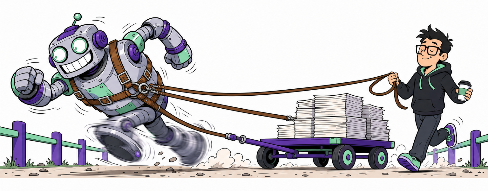
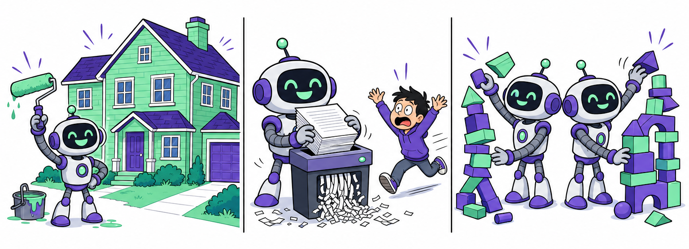

Agentic AI · Harness Engineering
모델을 바꿀 수 없다면,
모델 바깥을 만든다
코드를 대신 써 주는 도구는 어떻게 도는가. 그 루프를 우리가 어떻게 붙잡는가.
오해부터 걷어낸다
모델은 에이전트가 아니다
모델이 하는 일은 텍스트를 받아 텍스트를 내는 것 하나뿐이다. 파일을 읽는 것도, 명령을 실행하는 것도 모델 바깥의 프로그램이 한다.
정의
하네스란 모델이 아닌 모든 것이다
모델을 감싸는 코드 · 설정 · 실행 로직 전부.
모델
우리가 바꿀 수 없다. 학습시키지도, 고치지도 않는다.
하네스
우리가 전부 정한다. 그래서 여기가 엔지니어링의 대상이다.
harness — 말에 씌우는 마구. 말을 바꾸는 일이 아니라 마구를 바꾸는 일이다.
Vivek Trivedy, The Anatomy of an Agent Harness, LangChain, 2026-03-10
경쟁하는 말이 아니다
동심원
세 겹이다
프롬프트 — 우리가 적는 지시문 한 덩어리.
컨텍스트 — 모델이 그 순간 창 안에서 보는 모든 것. 문서, 파일, 도구 정의, 이전 대화.
하네스 — 그 바깥의 시스템 전체. 루프, 도구, 메모리, 샌드박스, 권한.
요청문이 아무리 좋아도 어디까지 할 수 있는지는 바깥 겹이 정한다.
한 장으로
느리게 만드는 게 아니라, 고삐를 쥐는 것

고삐를 쥔 개발자와 폭주하는 에이전트 로봇
사람은 뒤에서 따라간다. 앞에서 끌지 않는다.
고삐는 방향을 잡지 속도를 줄이지 않는다.
길 양옆의 난간은 고삐가 풀려도 남는다.

요청과 다른 일, 되돌릴 수 없는 일, 제각각인 결과를 그린 3컷 만화
시킨 것과 다른 일
한 페이지를 고쳐 달랬는데 메뉴를 갈아엎고, 없는 API 를 지어낸다.
되돌릴 수 없는 일
정리한다며 파일을 지우고, 실패하는 테스트를 지운다.
어제와 오늘이 다름
구조가 매번 다르고 문서는 옛것, 코드는 새것이다.
모델이 좋아지면 사라질 문제인가? 아니다. 무엇을 하면 안 되고 무엇을 지킬지는 우리 프로젝트의 사정이다.
하네스가 하는 세 가지 일
앞 장의 세 장면과 하나씩 짝
제어는 원하는 대로 움직이게 하는 게 아니다. 잘못된 방향으로 가지 못하게 하는 것이다.
코드 생성 도구의 한 턴
Agentic Loop · 여섯 단계
모델은 “읽어 줘” 라는 텍스트를 낼 뿐이다. 실제로 읽는 것은 하네스다 — 그래서 ③ 과 ④ 사이가 우리가 끼어들 수 있는 자리다.
실제로 오가는 것
tool_use → 실행 → tool_result
모델은 매번 대화 전체를 다시 읽는다. 길어질수록 느려지고 비싸진다.
돌려주는 문자열은 우리가 만든다. 잘 만든 도구는 실패했을 때 다음에 할 일까지 알려 준다.
종료 조건
루프는 언제 멈추나
정상 종료
도구를 더 부르지 않고 글로만 답한다.
승인 거부
권한 규칙에 걸려 그 도구를 못 쓴다.
한계 도달
컨텍스트가 차서 요약해 이어 붙인다.
요약은 손실이다. 그래서 중요한 결정은 대화가 아니라 파일에 남겨야 한다.
종료 조건이 없으면 같은 실패를 반복하며 돈다 — 최대 반복과 예산 한계도 하네스가 정한다.
저장소가 말을 거는 곳
CLAUDE.md
저장소 루트에 두면 매 턴 컨텍스트에 자동으로 들어간다. 같은 말을 다시 하지 않아도 된다.
여기 적는 것은 세 가지다.
① 이 프로젝트가 무엇인지
② 어떤 규칙을 지켜야 하는지
③ 실패해서 알게 된 것
그리고 이 파일은 커밋된다. 리뷰되고, 이력이 남고, 팀 전체에 같이 적용된다.
실제 저장소
초록 글씨가
하네스의 전부다
특별한 도구를 산 게 아니다. 마크다운 파일 몇 개와 스킬 세 개다.
원칙문서 1개
맥락문서 4개
스킬3개
연결1줄 + 링크 1개
같은 파일을 세 가지 일로 다시 본다
geo-chain 저장소
문서와 코드가 어긋나면 환경 제공이 무너진다. 그래서 감사 스킬이 환경 쪽에 있다.
사람은 어디에 서는가
매 단계 승인도, 방치도 아니다
질문은 “에이전트를 믿느냐” 가 아니다. “결과를 받아들일 조건이 무엇이냐” 다.
사람이 쓴 코드도 믿어서 합치지 않는다 — 테스트와 리뷰를 통과해서 합친다. 같은 기준을 적어 두는 것뿐이다.
하네스에 능력을 더하는 두 방법
스킬과 MCP
스킬 — 절차를 적는다
언제 쓰는지, 어떤 순서로 하는지, 무엇을 확인하고 끝내는지를 마크다운으로 적어 둔다.
새 도구를 붙이는 게 아니라 이미 있는 도구를 쓰는 순서를 정하는 것이다.
MCP — 바깥을 붙인다
사내 API, 데이터베이스, 디자인 시스템을 표준 규약으로 도구화한다.
앞에서 본 그 initialize · tools/list · tools/call 이 여기서 쓰인다.
MCP 가 무엇을 할 수 있는지를 늘리고, 스킬이 그것을 어떤 순서로 쓸지를 정한다.
빅밸류 사례
디자인 시스템은 이미 세 덩어리로 있었다
여기 적힌 한 줄이 오늘 이야기의 연결 고리다 — “LLM 기반 코드 생성 시 공통 컴포넌트 활용 가능”
사람을 위해 만든 표준이 그대로 에이전트를 위한 표준이 된다.
디자인을 부탁하지 않고 제약한다
MCP 로 붙이고, 스킬로 순서를 정한다
디자인 가이드를 프롬프트에 붙여 넣는 것과 다르다. 목록에 없는 컴포넌트는 애초에 부를 수가 없다.
정리
모델은 바꿀 수 없다.
우리가 손댈 수 있는 건 하네스뿐이다
원칙 문서 1개
지켜야 할 것과 하면 안 되는 것.
작업 문서 1개
이번에 무엇을 왜 그렇게 정했는지.
큰 하네스를 만들지 말 것. 작업 기록을 남기고, 어긋남을 감사하는 루프부터.